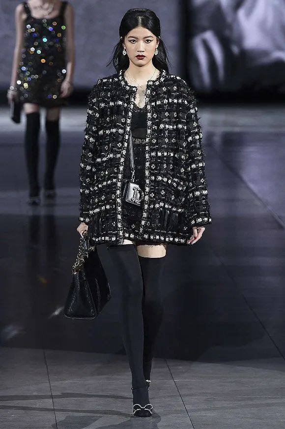

“局部爆发式增长”？韩国新冠疫情告急
原文链接 备份链接 *************▲*************2月23日，在韩国首尔，身着韩服的游客在景福宫游览。 （新华社/法新/图） 全文共2759字，阅读大约需要7分钟。 随着“31号”超级传播者的出现，新冠病毒在韩国 …
 在Giorgio Armani米兰时装周的秀场外，工作人员带起了口罩。图片来源：路透社
在Giorgio Armani米兰时装周的秀场外，工作人员带起了口罩。图片来源：路透社
记者：黄姗 编辑：周卓然
“
虽然大部分品牌在刚刚过去的周日按照原定计划完成了走秀，但米兰时装周余下日程活动恐怕将草草收场。
”
意大利已经成为欧洲受疫情影响最严重的国家。截至当地时间2月24日零时，意大利累计确诊新冠肺炎病例已达157例，其中三例死亡、两人治愈出院。
当地时间2月23日开始，意大利北部伦巴第大区和威尼托大区的11个市镇已经进入封城隔离，违反防疫要求者将面临监禁或罚款处罚。
虽然米兰和威尼斯目前不在封城名单上，但米兰已经宣布暂时关闭大学和米兰大教堂，而米兰时装周的活动也受到了影响。
担心疫情会进一步扩散，意大利奢侈品牌Giorgio Armani在22日晚上宣布，原定于上周日的米兰时装周发布会改成在一间空秀场内完成，所有受邀嘉宾和观众当晚都只能通过在线直播进行收看。
在一份公开声明中，该品牌表示，“这个决定是为了所有受邀嘉宾的健康着想，不让他们挤在拥挤的空间内。”
Giorgio Armani 2020秋季女装系列
意大利国家时装商会主席Carlo Capasa在一份公开声明中表示，“时装秀将会冷静地进行下去，目前没有恐慌，在米兰或我们所在的区域目前没有确诊病患或疑似病例的出现，我们希望现状能继续保持。”但声明也提到，各个品牌有权决定是否继续完成走秀。
虽然不是意大利国家时装商会的一员，意大利奢侈品牌Dolce&Gabbana也把2020秋冬系列大秀安排在23日当天。而D&G上周日的这场大秀差点泡汤。
时装秀的开秀时间通常晚于规定时间，因为看秀嘉宾们总是姗姗来迟。但因为疫情原因而加强监管的米兰当地警方给Dolce&Gabbana下了死规定，要求必须按时开秀，否则就要关闭秀场。
因此，在周日晚上演的Dolce&Gabbana秋冬时装秀上，据FashionNetwork报道，有数十位迟到的买手和编辑们被迫在米兰市中心Viale Piave的秀场上方的画廊内看完了这场大秀。


Dolce&Gabbana 2020秋冬系列
虽然大部分品牌在刚刚过去的周日按照原定计划完成了走秀，但米兰时装周余下日程活动恐怕仍将草草收场。
《女装日报》报道称，为配合意大利政府应对新冠肺炎疫情采取的行动，Michael Kors上周日取消了原计划在米兰举办的“007詹姆斯·邦德”联名系列发布会，该品牌与最新007系列电影《无暇赴死 》合作推出了一个胶囊系列。由该电影主演和Michael Kors母公司Capri控股首席执行官John Idol出席的聚会和晚宴也同样被取消。
米兰距离已经被封城的伦巴第大区仅有62公里，约一小时车程。多家媒体报道，在米兰和伦巴第大区之间的多场活动已经被取消，包括一些体育赛事。而原定于2月29日到3月2日之间在米兰举办的Mido眼镜贸易展，也将推迟到今年夏天举办。
米兰时装周之后紧接着就是2020巴黎时装周秋冬女装展。一位意大利设计师告诉行业媒体Footwearnews，她既担心呆在米兰，同时也害怕飞往巴黎。截止至24日8时30分，法国确诊新冠肺炎病例为7人，一人死亡，其中有五例已经康复出院。
未经授权 禁止转载

原文链接 备份链接 *************▲*************2月23日，在韩国首尔，身着韩服的游客在景福宫游览。 （新华社/法新/图） 全文共2759字，阅读大约需要7分钟。 随着“31号”超级传播者的出现，新冠病毒在韩国 …
原文链接 备份链接 体坛周报全媒体驻意大利记者 王勤伯 意大利新冠疫情突然爆发，不少同事、朋友和读者都对我表达了关心，这里就借体坛加APP的一个角落，和大家聊聊我正在经历的意大利疫情。 （1） 先聊一下对意大利卫生防疫系统和本次应对新冠的 …
原文链接 备份链接 体坛周报全媒体驻意大利记者 王勤伯 意大利新冠疫情突然爆发，不少同事、朋友和读者都对我表达了关心，这里就借体坛加APP的一个角落，和大家聊聊我正在经历的意大利疫情。 （3） 必须承认，疫情的发生始终有其偶然性，尤其是这 …
原文链接 备份链接 由于确诊病例迅速攀升，意大利成为亚洲国家之外疫情最严重的国家。为了控制病毒的扩散，意大利政府从2月22日起在11个市镇采取了“封城”举措。在被封锁地区，只有持特别通行证者才能出入 2月23日，意大利米兰市中心的大教堂广 …
原文链接 备份链接 2020年2月23日，武汉封城整一个月。以下是武汉在过去一个月中的31个片段，它们来自一线记者的所见、来自市民在社交平台上的记录，它们汇聚在一起，构成了这座城市最难忘的一段记忆。 策划*****｜*********《人 …